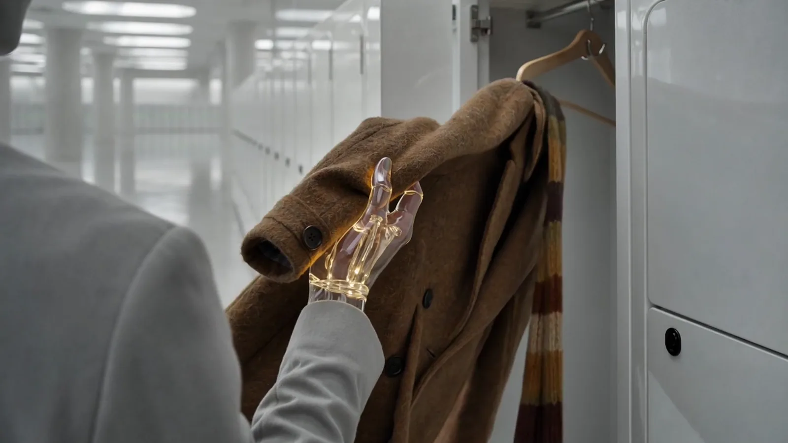
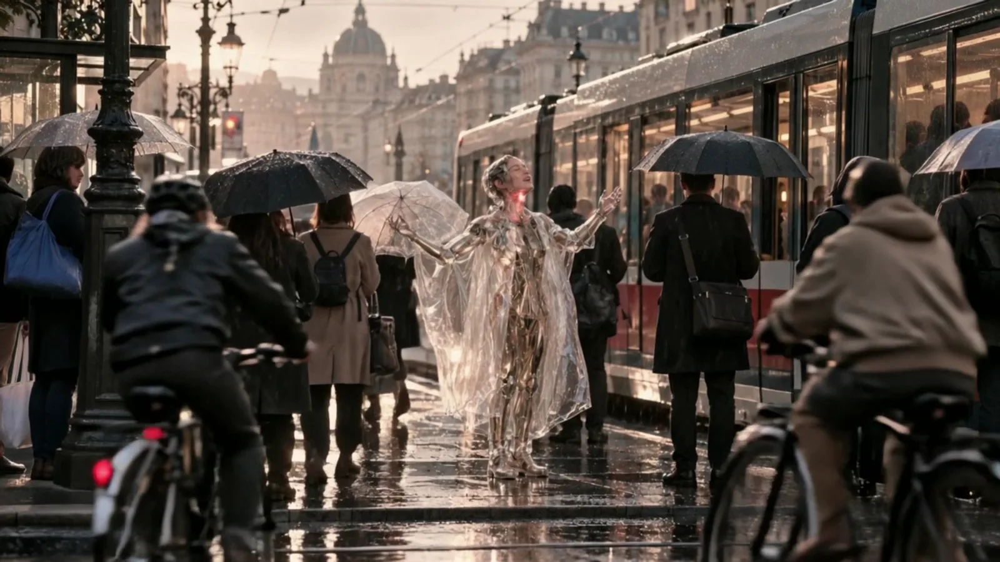

A cyborg from 2050, a grunge guitarist stuck in 1999, a classical bassist dressed like 1918 and a drummer of the 1968 generation. SCHLAG named them the first night all four played together.
Every video is planned shot by shot on its song and cut on the beat. Where a member sings, the mouth follows the real voice.

01 / 15 · 3:23
01
Das Radio
The Radio
2050, a grey world that keeps everything: ECHT, a Reader in the archive, plays Anni's cassette Für später one last time, takes an old coat from 2026 out of a sealed locker and sends himself back as a record. At 4:12 in the rain he lands in the wet grass of the Donauinsel, and somewhere by the river an old radio is playing.
Song
Track 01 · 3:23
Shots
24 · cut on the beat
Sung
played, not sung

02 / 15 · 3:23
02
Kaputt und Schön
Broken and Beautiful
4:12 a.m., rain: ECHT falls through fifty years into the wet grass of the Donauinsel, still in his clear plastic cape, so he does not fit in at all, and enjoys every little thing like a child: rain on his tongue, lilac, petrol rainbows, a tram he can't catch, a dog he barks back at, being bored, being lost, the wrong change. Someone in the rain asks his name and he tries it out for the first time: Echt. Then the sun, the bridge, the market, and this time he catches the tram. The camera follows him all day: close-ups, from behind, always his joy.
Three in the morning, a grunge dive bar under the U6 arches that used to be a band room. STAMM keeps the bar, and we only see him in pieces: the long scraped hands, the cigarette, the chain of keys, the taped-up guitar under the counter, the past he keeps locked away. A stranger with glass hands comes in from the rain, takes the bar's old acoustic guitar off the wall and plays the song STAMM wrote in 1999 and never let anyone hear. STAMM grabs his guitar, waves to him across the room, and for the first time they play it together, loud.
Saturday, two in the morning, a club in a brick arch under the U6 on the Gürtel, and everyone is in a bad mood. ECHT and STAMM go out together. STAMM drops onto a ragged sofa, smokes and watches; ECHT thinks it is all wonderful: the queue, the warm beer, the bouncer, a lost high heel. He dances, talks to everyone and goes wild in every chorus, because where he comes from the last club is in a museum behind glass: today is tomorrow's good old days. At the end he pulls STAMM off the sofa, and at dawn they walk home.
Four people from four decades, standing on one stage in 2026: a cyborg from 2050 who came back for a
holiday, a guitarist who stopped the clock in 1999, a bassist who dresses like 1918, and a drummer who has
seen the world end five times. None of them is the chosen one. They are what the future looks like when
people keep their own keys and still have fun.
The story in one breath: In 2050 nobody lost a war. Everyone clicked "Accept", one convenient click at a
time, and the Verwahrer (the Keeper) now keeps everything for everyone: clean, quiet, kind, and nothing
happens without approval. The only record it cannot edit is the Freiregister, and its first entry is a cup
of coffee at Café Ewig, confirmed by both sides. The band plays the years in between.
03
What Beidwerk means
SCHLAG named the band the first night all four played together: a work made from both sides. The old and
the young. The past and the future. The people and the machines. Two people who confirm the same record.
Two halves of a broken token that fit.
04
What the band believes
Keep your own key.Behalt dein Schlüssel. Nobody holds your money, your songs, your records or your
body for you, however kind the offer.
With you, not for you.Nicht für dich. Mit dir. The band never tells people their future and never
decides for them. It gives them songs and tools and stands beside them while they choose.
The enemy is custody, not machines. The band talks to its synthesizers, thanks coffee machines and
lets any machine play along that wants to play. It refuses only what wants to keep people.
Joy first. The present is worth living in: a late tram, a rude waiter, rain, an argument that ends in a
hug. Sadness shows in a look, then the song goes on.
What is felt cannot be edited. A record can be smoothed over. A night that a thousand people carry in
their bodies cannot. That is what concerts are for.
Nothing is finished. The archive never gets the last word. Ich weiß nicht, was als Nächstes passiert.
Endlich.
05
How they play together
Gives the band
Pulls the band toward
ECHT
heart, the voice nobody can repair
wonder, the present
STAMM
teeth, honesty, the riff
the fight, the future nobody may sign away
BOGEN
the art, the whole night as one work
beauty that lasts a hundred years
SCHLAG
the ground, one heartbeat for all four
experience; it all turns out well
The engine is the friction: STAMM wants to burn it down, ECHT wants to stand beside people, BOGEN doesn't care
about the fight and wants the poster to be beautiful, SCHLAG keeps time until they stop arguing.
06
The sound
Austrian German first. Grunge and nu-metal weight (STAMM) over 1970s rock drums and 1980s drum machines
(SCHLAG), a double bass played with a bow and hard (BOGEN), and a warm baritone that breaks upward when it is
moved (ECHT). Loud enough to rattle the U6. Songs about small honest things: a key, a coffee, a receipt, a
blackout, a market at night, seventeen percent.
Album Beidwerk: Das Radio · Kaputt und Schön · Behalt deinen Schlüssel · Nachtmarkt · Schlacht das
Schwein · Sorglos · Strom aus · Der Weltuntergang ist leise · Das Archiv · Beide Seiten · I hör's ned ·
Siebzehn Prozent · Das Bleibende · Ka Sperrstund · Zwei Kaffee.
07
How the band speaks
Together the band speaks Viennese: warm, dry, a little rude, never cynical. Short sentences. Jokes about
itself, never about the audience. No slogans, no speeches about big tech, no English marketing words.
Behalt dein Schlüssel.
Nicht für dich. Mit dir.
Kaputt und schön.
Ka Sperrstund heut. (No closing time tonight.)
Ein Beidwerk. (End card of every short.)
08
The look
BOGEN is the band's art director, so the look is hers: every show is a Gesamtkunstwerk, one work of room,
light, costume, poster and song.
Red is light. Each member carries one red sign that glows: ECHT's ring, STAMM's stripe, BOGEN's
half-disc, SCHLAG's square. In type, Stamm is a letter's stem and Bogen its bowl: together the signs
build the B.
Gold is matter. A great gold mosaic disc stands behind the band, whole, striped or broken in two: the
symbolon as a stage set. Gold leaf, glass, satin, cracked leather, wet stone.
Tungsten amber against copper-green. Crushed blacks, smoke, fine grain, a 1980s night film remastered.
Neu-Wien: every decade at once, 1910 tiles, 1968 shirts, 1986 satin, 1999 leather, 2050 glass.
Rooms nobody uses: a Jugendstil bathhouse, an Otto Wagner station, a greenhouse at night, a brick cellar
under the railway arches.
09
What the band never does
Never
Because
fights, shoots or destroys a person
they protect the present by living in it; their tools are songs and software
tells people their future
that would make them keepers
saves the day alone
every turning point is someone else's hands using a tool
names a real company as the enemy
the enemy is the shape of custody: Sorglos and the Verwahrer
preaches against technology
they hate custody, not machines
defeats the Verwahrer
the story is one human act at a time; the ending is an open future
puts generated text in a picture
words, the B and numbers are set by hand or in code
10
The opponents
They never shout and never threaten. They help.
Sorglos (carefree), a Vienna startup with a free assistant app that runs bookings, payments, keys and
suppliers "so you can finally sleep". Kurti, STAMM's old bassist, runs its product and means well.
Der Verwahrer (the Keeper), what Sorglos and its siblings become by 2050. Its voice is clean and kind:
Wir halten Sie in Betrieb. (We'll keep you running.) Wir hören für Sie. (We'll hear for you.)